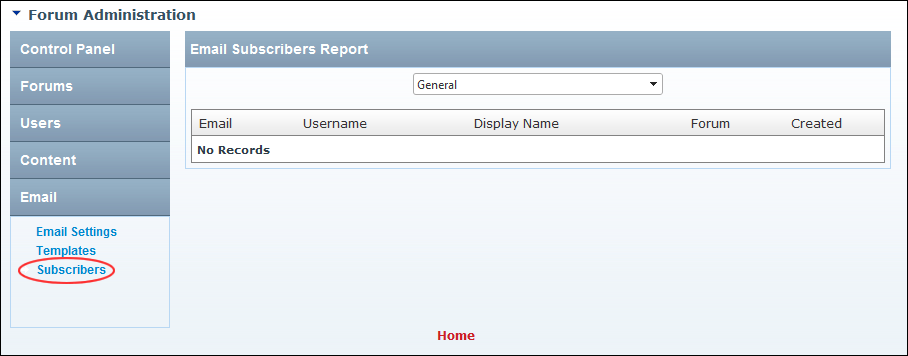

Viewing Email Subscribers Report
How to view the email subscriber report for the Forum module.
- Go to the Forum Administration page. See "Navigating to the Forum Admin Page"
- In the left-hand panel, select Email > Subscribers. This displays the Email Subscribers Report window.
- Select a report type for the drop down list. This displays details in the table below.

Viewing Email Subscribers Report